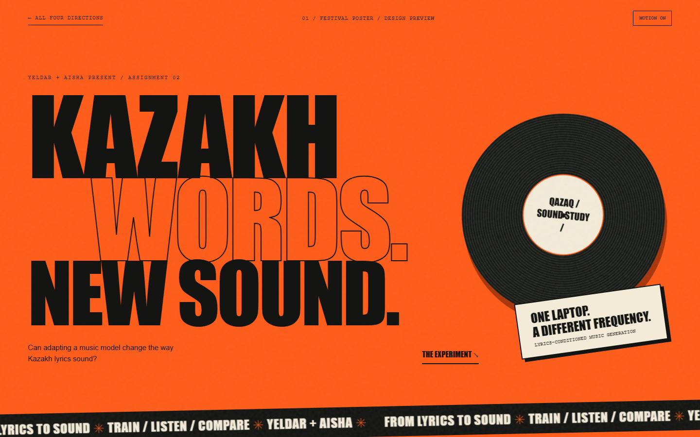
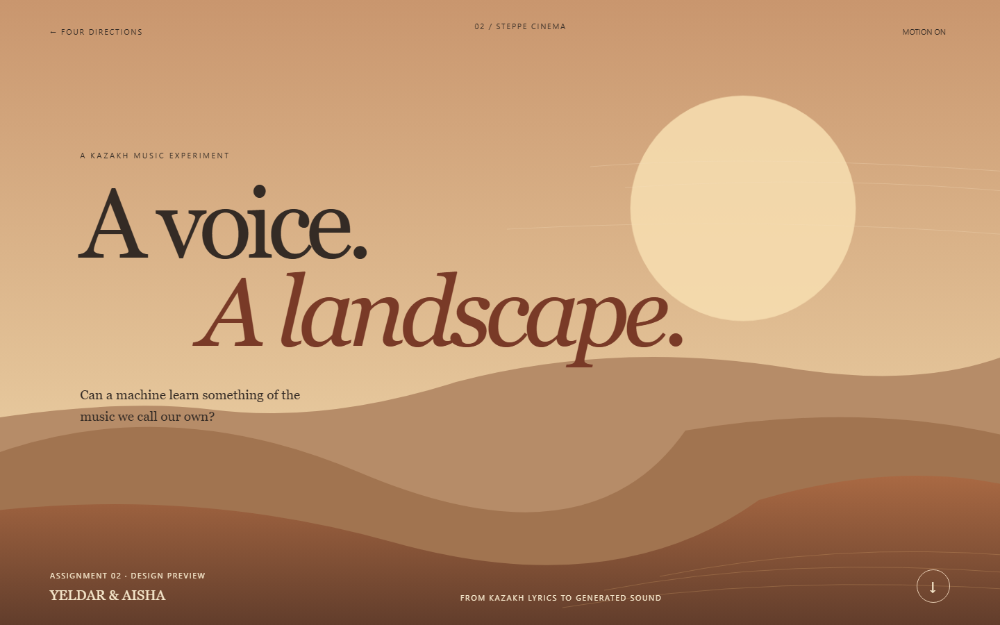
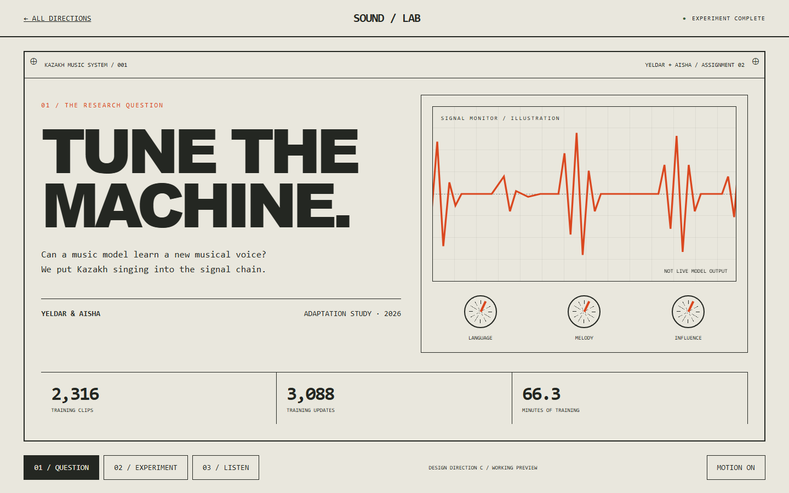
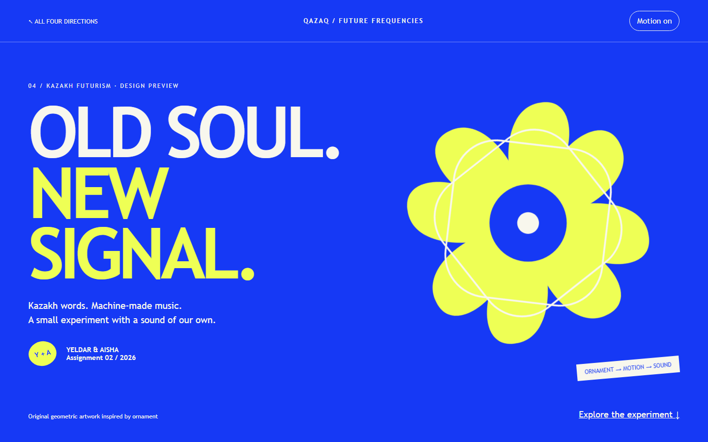

Explore direction A ↗AFestival PosterConcert energy. Huge condensed type, hot orange, moving text and a graphic rhythm built for a room.
Explore direction B ↗BSteppe CinemaA cinematic journey. Sweeping landscapes, warm sunlight, elegant type and slow atmospheric movement.
Explore direction C ↗CSound LaboratoryA working studio instrument. Signal paths, precise controls and an interactive research-console aesthetic.
Explore direction D ↗DKazakh FuturismA bold cultural exhibition. Cobalt and lemon, ornament-inspired geometry and playful graphic movement.